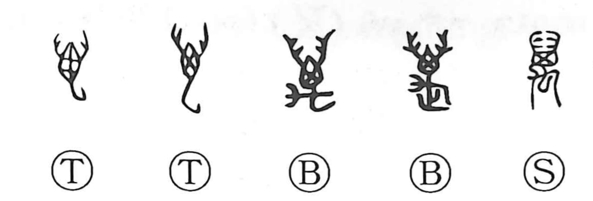

万

Kun: yorozu | On: man, ban
ten thousand ・ myriad
Explanation
Originally written as 萬, the character was a pictograph of an insect—likely a scorpion—its body and limbs spread in profile. Very early on, however, the graph was pressed into service as a numeral, and oracle-bone inscriptions already use it for “ten thousand,” from which it broadened to mean “myriad” or simply “a great many.” In the Book of Odes (Bei Feng, Jian Xi), the phrase 公庭萬舞 preserves another early nuance: 萬 functions as the name of a ceremonial dance of the Yin people performed with feathered “wings.” The modern form 万 inherits this ancient borrowing, conveying the sense of a vast multitude.